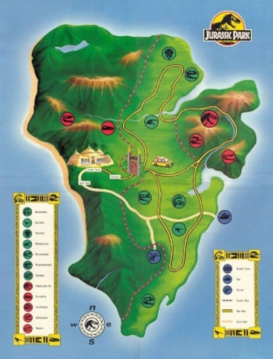

---------| Inicia el "contenido central" de página |---------
Titulo 1 (Section1): Jurassic Map
Subtítulo 1: Audio
Párrafo1: Bienvenid@ al mapa de Jurassic Park. Nota: no apagar las cercas electrificadas, plis!
Subtítulo 2: Mapa
Párrafo2: Isla Nublar was a remote island 120 miles west of Costa Rica and 87 miles east of the Muertes Archipelago. The island has a surface of 77 square kilometers with mountain ridges which created varied ecological niches.

Párrafo 2: Pie de página del mapa.